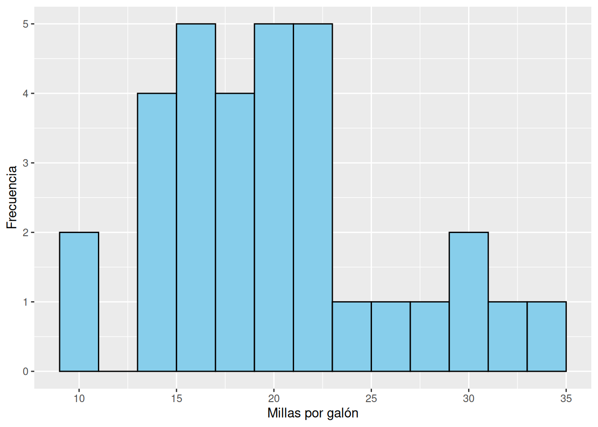
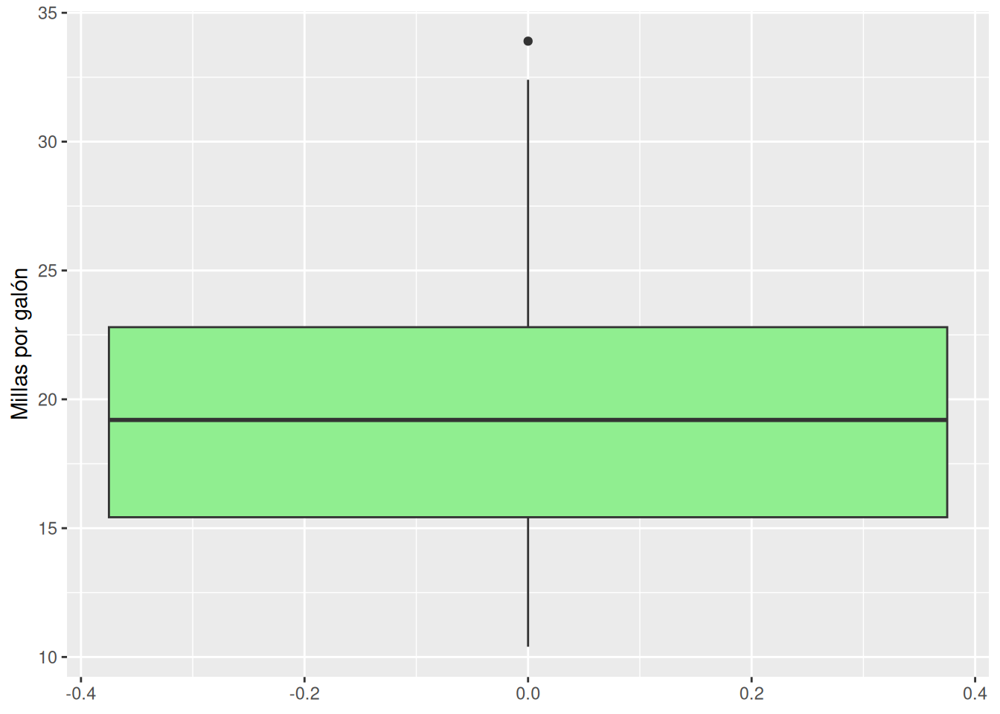

2 Estadística descriptiva
La estadística descriptiva se ocupa de resumir, organizar y presentar la información de un conjunto de datos, sin pretender hacer inferencias sobre una población mayor (Navarro, Foxcroft, and Faulkenberry 2025).
Sus herramientas permiten transformar datos brutos en información comprensible a través de tablas, medidas numéricas y representaciones gráficas (Moore, McCabe, and Craig 2013).
2.1 Ordenación de los datos
El primer paso en la estadística descriptiva es la organización de los datos, es decir, cómo se disponen en una estructura clara que permita analizarlos (Navarro, Foxcroft, and Faulkenberry 2025).
El enfoque más común es el enfoque tabular, que dispone la información en:
- Filas: cada fila corresponde a una unidad de análisis (por ejemplo, un estudiante, un paciente, una observación experimental).
- Columnas: cada columna corresponde a una variable (por ejemplo, edad, sexo, puntaje en una escala).
Ejemplo: en un cuestionario aplicado a 5 estudiantes, las filas representan a cada estudiante y las columnas las variables recolectadas (edad, sexo, nivel de ansiedad).
2.2 Estadísticas para variables cualitativas
Cuando los datos son cualitativos, los resúmenes más comunes son (Agresti and Finlay 2018):
- Conteos absolutos: número de casos en cada categoría.
- Frecuencias relativas (proporciones o porcentajes): relación de cada categoría respecto al total, expresada como proporción o en %.
- Tasas: razón entre un número de casos y la población expuesta en un periodo de tiempo (p. ej., tasa de deserción escolar).
- Razones: cociente entre dos frecuencias de distinta categoría (p. ej., razón hombre/mujer).
- Índices: valores compuestos que resumen múltiples indicadores en una sola medida.
2.3 Medidas de resumen (Tendencia central)
Las medidas de tendencia central resumen en un solo valor el “centro” o valor típico de la distribución de los datos (Navarro, Foxcroft, and Faulkenberry 2025):
- Media (promedio aritmético): suma de todos los valores dividida entre el número de observaciones.
\[ \bar{x} = \frac{1}{n}\sum_{i=1}^n x_i \]
Mediana: valor que divide el conjunto ordenado en dos mitades de igual tamaño.
Útil cuando la distribución es asimétrica o existen valores atípicos.Moda: valor más frecuente en el conjunto de datos.
Especialmente útil en variables cualitativas o discretas.
Ejemplo: En los puntajes 5, 6, 6, 7, 10:
- Media = 6.8
- Mediana = 6
- Moda = 6
2.4 Medidas de dispersión
Las medidas de dispersión indican el grado en que los datos se alejan del valor central. Son esenciales para complementar las medidas de tendencia central (Navarro, Foxcroft, and Faulkenberry 2025):
- Rango: diferencia entre el valor máximo y el mínimo.
\[ R = x_{\max} - x_{\min} \]
- Varianza: medida promedio de la dispersión de los datos respecto a la media.
\[ s^2 = \frac{1}{n-1}\sum_{i=1}^n (x_i - \bar{x})^2 \]
- Desviación estándar: raíz cuadrada de la varianza, expresa la dispersión en las mismas unidades de la variable.
\[ s = \sqrt{s^2} \]
- Coeficiente de variación: Cociente entre la desviación estándar y la media, expresa la dispersión de los datos en términos relativos, mientras el valor se más cercano a cero existe menos dispoersión.
\[cv=\frac{s}{\bar{x}}\]
\[cv\%=\frac{s}{\bar{x}}*100\]
Ejemplo: En los datos 5, 6, 6, 7, 10:
- Rango = 5
- Varianza = 3.7
- Desviación estándar ≈ 1.92
- Coeficiente de variación = 0.283
- \(cv\%=28.3\)
Notas:
- Las medidas de resumen y dispersión deben interpretarse en conjunto.
- Una media sin dispersión puede ser engañosa; la dispersión muestra la heterogeneidad de los datos.
- En investigación psicológica, es clave reportar ambas dimensiones para dar una imagen completa de los resultados.
2.5 Medidas de forma
Además de la tendencia central y la dispersión, es importante describir la forma de la distribución de los datos.
Las medidas de forma permiten evaluar si una variable se distribuye de manera simétrica o presenta concentraciones atípicas de valores (Navarro, Foxcroft, and Faulkenberry 2025; Moore, McCabe, and Craig 2013).
2.5.1 Asimetría (AS)
La asimetría (AS) indica el grado en que la distribución se desvía de la simetría respecto a la media:
- AS > 0 (positiva, sesgo a la derecha): la cola de la distribución es más larga hacia valores altos.
Ejemplo: ingresos en una población, donde unos pocos individuos concentran valores muy elevados.
- AS < 0 (negativa, sesgo a la izquierda): la cola es más larga hacia valores bajos.
Ejemplo: edad de jubilación, donde la mayoría se concentra cerca del máximo.
- AS ≈ 0: distribución simétrica, como la normal.
Fórmula (coeficiente de asimetría de Fisher):
\[ AS = \frac{\frac{1}{n}\sum_{i=1}^n (x_i - \bar{x})^3}{s^3} \]
donde \(s\) es la desviación estándar.
2.5.2 Curtosis (KU)
La curtosis (KU) mide el grado de concentración de los valores en torno a la media (apuntamiento de la distribución):
- KU > 0 (leptocúrtica): mayor concentración en el centro y colas más pesadas que la normal.
- KU = 0 (mesocúrtica): distribución similar a la normal.
- KU < 0 (platicúrtica): menos concentración en el centro, distribución más achatada.
Fórmula (exceso de curtosis de Fisher):
\[ KU = \frac{\frac{1}{n}\sum_{i=1}^n (x_i - \bar{x})^4}{s^4} - 3 \]
donde \(KU = 0\) corresponde a la normal.
Notas didácticas
- AS y KU complementan las medidas de tendencia central y dispersión, aportando información sobre la forma.
- En investigación psicológica, ayudan a verificar supuestos de normalidad antes de aplicar pruebas paramétricas.
- Valores extremos de AS o KU pueden afectar fuertemente las inferencias estadísticas.
- En la práctica, es más informativo mostrar un histograma o un diagrama de caja que reportar
Ejemplo aplicado:
En un test de ansiedad aplicado a 200 estudiantes, se obtiene AS = 1.2 (asimetría positiva moderada) y KU = 1.5 (leptocúrtica). Esto indica que la mayoría de los estudiantes tienen niveles bajos a moderados, pero existe un pequeño grupo con niveles muy altos que genera colas largas y concentración en el centro.
2.6 Visualización univariante
La visualización univariante muestra la distribución de una sola variable.
Permite identificar patrones, valores típicos y posibles atípicos (Navarro, Foxcroft, and Faulkenberry 2025).
2.6.1 Para variables cualitativas
- Gráfico de barras: compara frecuencias absolutas o relativas de categorías.
- Gráfico de sectores (pie chart): representa proporciones como partes de un todo (menos recomendable en contextos académicos, pero popular en divulgación).
2.6.2 Para variables cuantitativas
- Histograma: muestra la distribución dividiendo el rango en intervalos.
- Polígono de frecuencias: línea que conecta las frecuencias de un histograma.
- Diagrama de caja (boxplot): resume mediana, cuartiles y valores atípicos.
- Densidad (kernel density plot): estimación suave de la distribución.
Ejemplos

Ejemplos web:
Seeing Theory (Brown University): https://seeing-theory.brown.edu/
→ Sección de Distributions e Exploratory Data Analysis, con histogramas, boxplots y densidades interactivos.Seeing Data: http://seeingdata.org/ → Centrado en visualización para ciencias sociales.